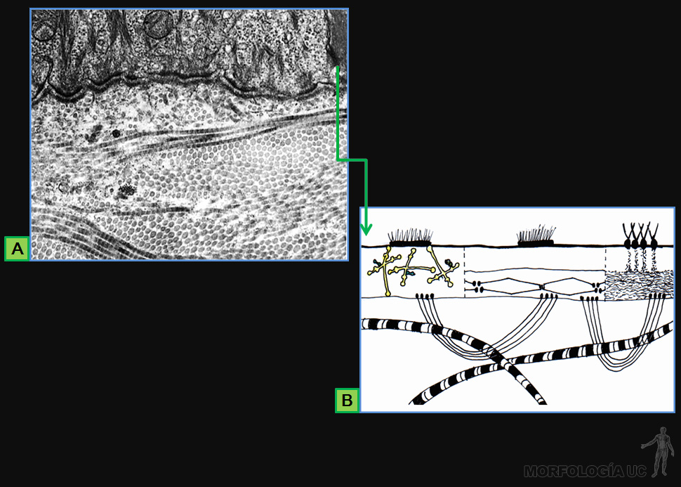
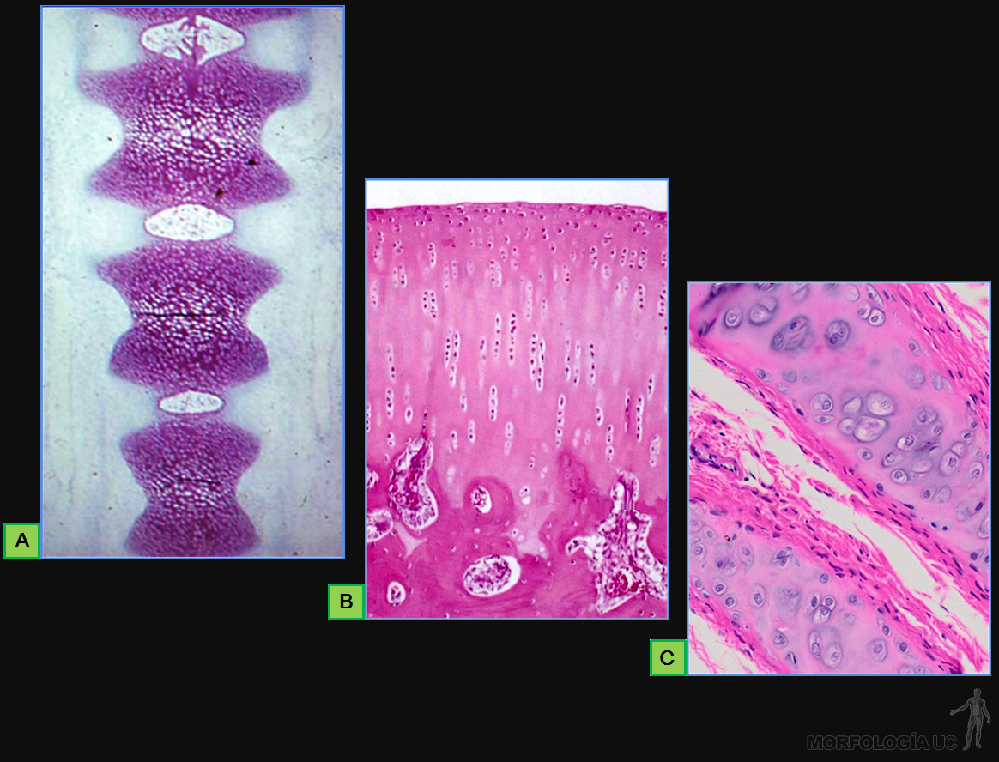
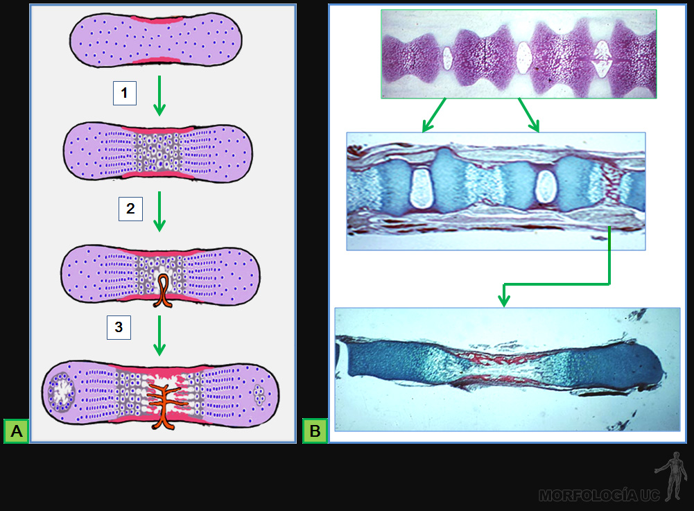

B) conjuntivo laxo con células adiposas y tinción especial para macrófagos y células cebadas;
C) conectivo reticular en linfonodo;
D) adiposo en hipodermis.
Fig. 3-34: MO de tejidos conectivos, tinción HE.
A) conectivo fibroso denso en tendón;
B) placa de cartílago en tráquea;
C) hueso esponjoso.
Fig. 3-35: Esquemas de clases de células conectivas.
A) células propias de cada tipo de tejido conectivo;
B) células que migran desde la sangre hacia los conectivos.
Fig. 3-36:
A) MO de tejido mesenquimático en que destacan sus células de forma estrellada, tinción con Azul de Toluidina (AT);
B) MET de la misma zona, con fibroblastos en diferenciación y sustancia fundamental entre ellos.
Fig. 3-37: MO de fibroblastos.
A) dermis de animal joven en muestra de bola de edema, tinción con AT;
B) conectivo laxo, tinción HE;
C) conectivo fibroso, destacando en la matriz intercelular la tinción en negro de fibras elásticas y en rosado las fibras colágenas, teñido con Hematoxilina de Verhoeff (HV).
Fig. 3-38: MO de tejidos conectivos, teñidos con HE.
A) placa de cartílago hialino con condroblastos vecinos al pericondrio;
B) trabécula de hueso con osteoblastos adheridos a su superficie.
Fig. 3-39: MO de tejido conjuntivo laxo rico en células libres.
A) macrófagos con citoplasma de color azul por partículas fagocitadas y células cebadas cuyo citoplasma está teñido de color rojo;
B) abundantes leucocitos granulares que se han infiltrado en este tejido, tinción de van Gieson (VG).
Fig. 3-40:
A) MO en que destacan células cebadas en conjuntivo de la dermis, en muestra de bola de edema, tinción AT;
B) MET de corte por una célula cebada;
C) esquema de la membrana de una célula cebada, con receptores para moléculas de IgE.
Fig. 3-41:
A) MO por tejido conjuntivo con macrófagos que han fagocitado eritrocitos dañados y acumulan gránulos de color amarillo en su citoplasma, tinción HE;
B) MET de corte por macrófago y esquema de su citoplasma rico en lisosomas primarios y secundarios.
Fig. 3-42:
A) MO del conjuntivo de la lámina propia intestinal, infiltrado por linfocitos y células plasmáticas, tinción HE;
B) MET de un corte por una célula plasmática.
Fig. 3-43:
A) MO por tejido conjuntivo de la lámina propia intestinal, infiltrado por linfocitos, tinción HE;
B) MET de corte por un linfocito.
Fig. 3-44:
A) MO de tejido conjuntivo laxo infiltrado por granulocitos neutrófilos, tinción vG;
B) MET de un granulocito neutrófilo y en;
C) MET de un granulocito migrando en la matriz extracelular del conjuntivo.
Fig. 3-45:
A) MO de tejido conectivo fibroso, destacando las fibras elásticas en negro y las fibras colágenas en rosado, tinción HV;
B) MET de la matriz extracelular subyacente a la lámina basal del endotelio (fibra elástica: flechas naranja, fibrillas de colágeno III: flechas rosadas).
Fig. 3-46:
A) MET por fibrillas de colágeno I;
B) esquema de la estructura molecular de una fibrilla colágena;
C) esquema de una molécula de colágeno.
Fig. 3-47:
A) MO por tejido conjuntivo fibroso de la dermis, tinción HE;
B) MET de manojos de fibrillas de colágeno I, longitudinales y transversales, en una fibra colágena;
C) MO de tejido conjuntivo reticular, con fibras reticulares de color negro;
D) MET de por fibra reticular en corte transversal, cuya por fibrillas de colágeno III, están rodeadas por una prolongación de célula reticular.
Fig. 3-48:
A) MET de fibrillas colágenas vecinas a una fibra elástica, junto a un esquema de su estructura (fibrilina: roja, elastina: amarilla);
B) estructura de la molécula de desmosina;
C) esquema de la organización de las moléculas de elastina en fibras elástica relajadas y traccionadas.
Fig. 3-49:
A) MO de conjuntivo de la dermis, en que destacan los fibroblastos disociados, en muestra de bola de edema y tinción AT;
B) estructura de las hexosas propias del ácido hialurónico y esquema de la forma de una molécula de hialuronato hidratado.
Fig. 3-50:
A) estructura de las hexosas propias de los glicosaminoglicanos sulfatados;
B) forma de dos proteoglicanos;
C) estructura del complejo del acido hialurónico asociado a agregacanos.
Fig. 3-51: Esquema de las proteínas de asociación.
A) fibronectina y;
B) laminina.

Fig. 3-52:
A) MET del conjuntivo subyacente al epitelio de la epidermis;
B) esquema de la ubicación de las moléculas y agregados de colágeno propios de esta asociación.
Fig. 3-53:
A) MO del conjuntivo de la dermis en que destacan los fibroblastos, muestra de bola de edema, tinción A.T;
B) Dibujo de un fibroblasto junto a fibras colágena y elásticas, tal como se observa al MET;
C) Esquema ilustrando el rol del fibroblasto en la síntesis de los componentes de la matriz extracelular.
Fig. 3-54: Proceso de síntesis de moléculas de colágeno y la formación de fibrillas colágenas en:
A) pasos intracelulares de la síntesis del procolágeno;
B) formación del tropocolágeno;
C) interacción de moléculas de tropocolágeno para formar una fibrilla colágena;
D) MET de una fibrilla; y
E) agrupación de fibrillas para formar una fibra colágena.
Fig. 3-55:
A) MO de tejido conjuntivo laxo, tinción HE;
B) tejido conectivo fibroso, con fibras elásticas en negro y las fibras colágenas en rosado, tinción con HV;
C) macrófagos con partículas fagocitadas de color azul y células cebadas con el citoplasma en rojo.
Fig. 3-56:
A) MO de conjuntivo reticular en bazo, tinción HE;
B) MO de un linfonodo, en que destaca el estroma de células y fibras reticulares (flecha verde);
C) esquema de la estructura del estroma.
Fig. 3-57:
A) MO del conjuntivo fibroso denso desordenado en la dermis, tinción HE;
B) dibujo de la disposición de fibroblastos y fibras colágenas en este tejido;
C) MET de fibrillas de colágeno I que forman una fibra colágena.
Fig. 3-58: MO de tendón, con tejido conjuntivo fibroso denso ordenado, tinción HE; en:
A) corte longitudinal y;
B) corte transversal;
C) dibujo de la relación entre fibroblasto y fibras colágenas en este tejido, como se observa al MET.
Fig. 3-59: Esquemas del tejido conjuntivo elástico.
A) disposición de fibras elásticas y fibroblastos en un ligamento elástico;
B) disposición de ligamentos flava en la columna vertebral.
Fig. 3-60:
A) MO del tejido adiposo unilocular de la hipodermis, tinción HE;
B) Dibujo de la estructura de este tejido tal como se observa al MET.
Fig. 3-61:
A) MO de una placa de cartílago en la tráquea, tinción HE; Dibujos de:
B) la estructura de un condroblasto y;
C) la estructura de un condrocito rodeado de matriz extracelular cartilaginosa.
Fig. 3-62: Tejidos cartilaginosos en crecimiento.
A) MO de placa cartilaginosa vecina al pericondrio, tinción HE;
B) dibujo de la estructura de esta zona, en crecimiento por aposición;
C) grupos isógenos en zona central de cartílago en tráquea, en crecimiento intersticial, tinción HE;
D) zona de proliferación intersticial del cartílago epifisiario, tinción HE.
Fig. 3-63: Esquemas de componentes de la matriz extracelular cartilaginosa.
A) fibrillas de colágeno II;
B) acido hialurónico asociado a proteoglicanos;
C) fibrillas colágenas II y agregados de ácido hialurónico y proteoglicanos;
D) estructura de un condrocito rodeado de su matriz territorial (flecha hacia B) e interterritorial (flecha hacia C).

Fig. 3-64: MO de cartílago hialino, tinción HE, en:
A) columna vertebral de feto;
B) cartílago articular;
C) placas de cartílago en bronquio.
Fig. 3-65: MO de tejidos cartilaginosos.
A) cartílago elástico en pabellón auricular, fibras elásticas de color negro, tinción HV;
B) cartílago fibroso en disco intervertebral, tinción HE, y en;
C) sus glicosaminoglicanos se tiñen de color verde con Alcian Blue.
Fig. 3-66:
A) epífisis del fémur: MO de cortes por tejido óseo;
B) espícula ósea decalcificada, delimitada por osteoblastos, tinción HE;
C) espícula ósea calcificada, con lagunas y canalículos de color café;
D) osteoclastos junto a trabécula de hueso decalcificado, tinción HE.
Fig. 3-67:
A) MO de sistema de Havers hueso decalcificado, tinción HE;
B) MET en la disposición laminillar de las fibrillas de colágeno I;
C) microscopía de luz polarizada (MLP) de sistema de Havers en hueso decalcificado;
D) MO de corte por hueso calcificado en que destacan las laminillas ósea.
Fig. 3-68:
A) MO de zona vecina a un centro de osificación en cráneo de feto, tinción HE;
B) esquema de células: osteoprogenitoras y en diferenciación a osteoblastos vecinas a hueso calcificado (negro);
C) dibujo de un osteoblasto depositando el osteoide sobre matriz ósea calcificada.
Fig. 3-69:
A) MO de corte por hueso decalcificado, en el que los osteocitos ocupan su laguna en la matriz ósea, tinción HE;
B) MO de corte por hueso calcificado en que aparecen de color café, las prolongaciones de los osteocitos en los canalículo óseos;
C) dibujo que muestra la estructura de los osteocitos y sus prolongaciones, vecinos a la matriz ósea calcificada (negra).
Fig. 3-70:
A) MO de trabéculas óseas cubiertas por células de revestimiento (flechas verdes), tinción HE;
B) MO de un osteoclasto adosado a la matriz ósea, y a la derecha, un osteoclasto en una cavidad de reabsorción ósea;
C) dibujo de la estructura de un osteoclasto removiendo matriz ósea calcificada.
Fig. 3-71: MO de tejido óseo, tinción HE.
A) trabéculas óseas, irrigadas por capilares ubicados en el conjuntivo adyacente;
B) tejido óseo compacto, con vasos sanguíneos en conductos de Volmann (cV) y de Havers (cH).
Fig. 3-72:
A) MO de trabéculas de hueso laminillar, tinción HE; mientras que en;
B) al MLP destaca la disposición de las laminillas;
C) MO de una trabécula con osteoblasto por una cara (flecha), y por la otra un osteoclasto (cabeza de flecha), tinción HE.
Fig. 3-73: Cortes transversales por diáfisis.
A) MO de hueso calcificado, con laminillas concéntricas en un sistema de Havers;
B) MO de hueso descalcificado con sistemas de Havers rodeados por osteocitos entre las laminillas intersticiales;
C) MLP del sistema laminillar subperióstico y las laminillas interticiales subyacentes a él.
Fig. 3-74:
A) esquema de la unidad de remodelación interna del hueso compacto;
B, C y D) M.O de cortes de tejido óseo que muestran las etapas del proceso que se indican con las flechas, tinción HE.
Fig. 3-75: MO de zonas vecinas al periostio, en cortes transversales por la diáfisis.
A) destaca el periostio celular y presencia de osteoblastos, tinción HE;
B) MLP de esta zona, que carece del sistema laminillar subperióstico;
C) MLP de hueso adulto que ya no crece en grosor y muestra el sistema laminillar subperiostico.
Fig. 3-76: MO de zona de crecimiento en longitud de hueso, tinción HE.
A) corte longitudinal por el cartílago epifisiario en osificación endocondral;
B) cartílago proliferado e hipertrofiado;
C) cartílago calcificado, zona de remoción y depósito de osteoide sobre matriz cartilaginosa calcificada;
D) zona vecina al periostio;
E) remodelación del hueso neoformado en corte transversal.
Fig. 3-77: MO de cortes por cráneo de feto, teñidos con HE.
A) centro de osificación directa, a partir de células mesenquimáticas;
B) trabéculas de hueso primario en proceso de crecimiento (flechas verdes) y remodelación (cabeza de flecha).

Fig. 3-78:
A) esquemas que ilustran el proceso de reemplazo del modelo cartilaginoso por tejido óseo;
B) MO de cortes por columna vertebral de feto y por tarso, que muestran las etapas de la osificación endocondral indicadas con flechas, tinción HE.